Detailed table of collection
Edit Mode - Lattice Context Menu
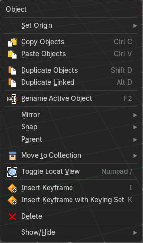
Call this menu with double right click in the 3D viewport. You need to be in Edit mode with a armature object.
Set Origin
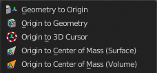
| Entry | What it does |
|---|---|
| Geometry to Origin | Sets the geometry to origin. |
| Origin to Geometry | Sets the origin to geometry. |
| Origin to 3D cursor | Sets the origin to the 3D cursor. |
| Origin to Center of Mass(Surface) | Sets the origin to the center of mass, calculating it from the center of the surface area. |
| Origin to Center of Mass(Volume) | Sets the origin to the center of mass, calculating from the center of the Volume. It must be manifold geometry with consistent normal's. |
Last Operator Set Origin
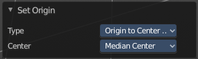
The last operator is the same for all set origin methods.
| Entry | What it does |
|---|---|
| Type | Choose the method again. |
| Center | Use the median center or the bounds center for calculation. |
Copy Objects
Copies the selected object(s).
Paste Objects
Pastes copied object(s).
Last Operator Paste Selection from Buffer
Select
Select pasted object(s).
Active Collection
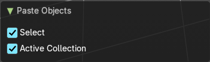
Put the pasted objects into the active collection.
Duplicate Objects
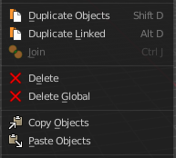
Duplicates selected objects. The copy is completely independent. All containing data gets duplicated too. And you can edit the object instances completely independent. then.
You are automatically in grab mode, and so you can easily move the object out of position. Which is sometimes wanted, since you can position the duplicate then. But sometimes this is unwanted. A right click after releasing the mouse lets the object snap back into its creation position.

When you drag the duplicate around you will see the position values in the header.
Last Operator Duplicate
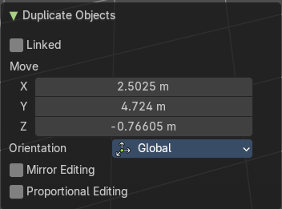
| Entry | What it does |
|---|---|
| Duplicate Objects | Linked: With this option ticked the duplication happens with linked data. |
| Move X , Y , Z | The Position of the duplicated object. |
Orientation
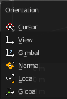
Orientation is a drop-down box choose the type of orientation for the duplicate action.
Proportional editing

Enables proportional editing. Activating proportional editing reveals further settings.
| Entry | What it does |
|---|---|
| Proportional Falloff | Adjust the falloff methods. |
| Proportional Size | See and adjust the falloff radius. |
| Connected | The proportional falloff gets calculated for connected parts only. |
| Projected(2D) | The proportional falloff gets calculated in the screen space. Depth doesn't play a role. When it's in the radius, then it gets calculated. |
Rename active Item / Object

Allows you to rename the currently active item or object. A rename dialog will pop up where you can type in a new name for the current item. You can have more than one item selected. Just the active item gets renamed.
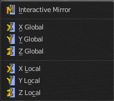
Mirror sub menu
Mirrors the selection.
Interactive Mirror
Mirrors the selection.
Usage:
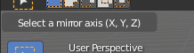
Activate the tool. In the header you will now see further instructions. Which is: type in the axis at which you want to mirror. Interactive mirroring starts in Global space. You can change the orientation in the last operator.
| Entry | What it does |
|---|---|
| X Y Z Global | Mirrors along the global axis. |
| X Y Z Local | Mirrors along the object axis. |
Last Operator Mirror
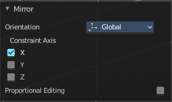
Orientation

Choose the orientation in which the transform should happen.
Proportional editing
Enables proportional editing. Activating proportional editing reveals further settings.
| Entry | What it does |
|---|---|
| Proportional Falloff | Adjust the falloff methods. |
| Proportional Size | See and adjust the falloff radius. |
| Connected | The proportional falloff gets calculated for connected parts only. |
| Projected(2D) | The proportional falloff gets calculated in the screen space. Depth doesn't play a role. When it's in the radius, then it gets calculated. |
Snap sub menu
Selection to Cursor
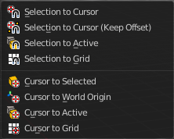
Snaps the currently selected object(s) to the cursor location.
Selection to Cursor(Keep Offset)
Snaps the currently selected object(s) to the cursor location, but keeps the offset of the selected objects to each other. Means the center of the current selection goes to cursor position. Not every individual object.
Last operator Snap Selection to Cursor
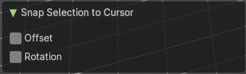
Offset
Keep the offset of the selected objects to each other.
Rotation
Rotate to match the cursor.
| Entry | What it does |
|---|---|
| Selection to Active | Snaps the currently selected object(s) to the active object. |
| Selection to Grid | Snaps the currently selected object(s) to the nearest grid point. |
| Cursor to Selected | Moves the cursor to the center of the selected object(s). |
| Cursor to World Origin | Moves the cursor to the world origin. |
| Cursor to Active | Moves the cursor to the center of the active object. |
| Cursor to Grid | Moves the cursor to the nearest grid point. |
Parent sub menu
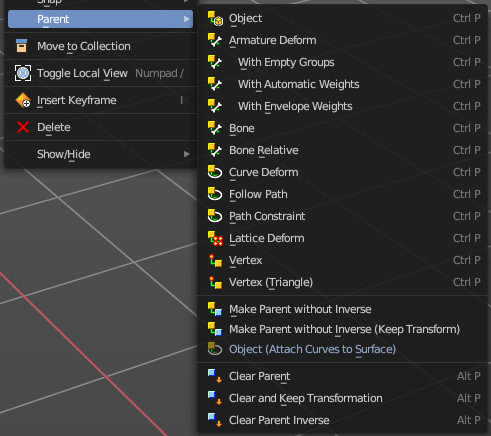
The parent menu provides you with all parenting methods at object level.
To use parenting you first have to select the source object, hold down shift, then select the target object so that both are selected. This also works in the outliner (here you can also simply hold down shift and drag the source object at the target object to make it a child). The source object becomes the child object then.
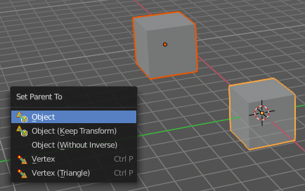
The methods are object type dependent. The armature methods requires to have a mesh and an armature. The path methods a curve. The available methods for the current selection can also be found out by pressing the hotkey ctrl P. This calls the parenting menu with just the available methods.
Object
Sets the parent to selected object.
Object ( Keep Transform)
Sets the parent to selected object, but applies all transform before the operation.
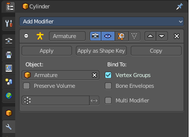
Armature parenting creates an armature modifier at the mesh.
| Entry | What it does |
|---|---|
| Armature Deform | Sets the parent to selected Armature. |
| With empty Groups | Sets the parent to selected Armature, using empty groups. |
| With Envelope Weights | Sets the parent to selected Armature, using envelope weights |
| With automatic Weights | Sets the parent to selected Armature, with automatic weights. |
| Bone | Sets the parent absolute to selected Bone. |
| Bone Relative | Sets the parent relative to selected Bone. |
Curve Deform
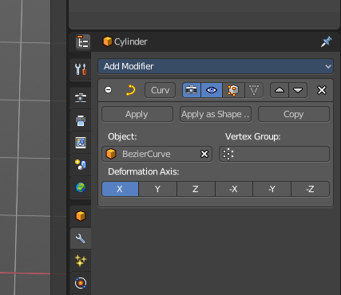
allows you to deform a mesh by a curve shape. It adds a curve modifier at the mesh.
Usage:
Create a curve. Bend it in edit mode to your needs. Create a mesh. I have for demonstration purposes created a cylinder with several subdivisions.
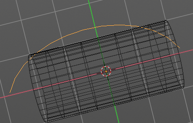
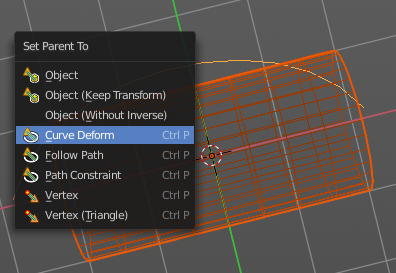
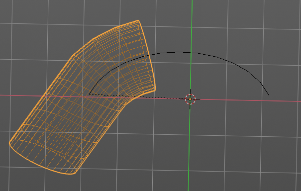
To demonstrate the only pitfall, by parenting the center of the object goes to the start point of the curve. So you better put the origin at the bottom of the cylinder before parenting.
Follow Path
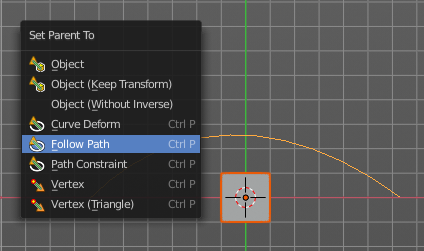
Attaches an object to a curve. The curve then gets used to animate the object position. Every vertice of the curve is one key frame.
Create a curve, create an object, hold down shift and select the curve, make parent ...
Take care of the position and rotation of the object before parenting it to the curve. It influences how the object behaves.
There is a constraint with the same name and functionality. But parenting with follow path will not create such a constraint.
Path Constraint
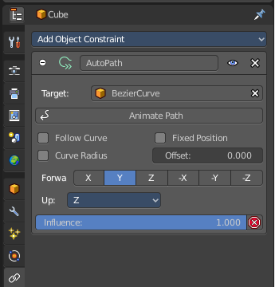
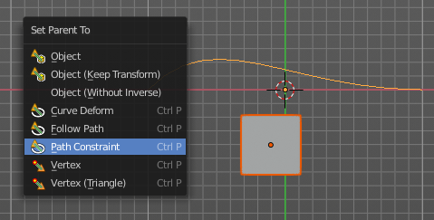
Path constraint adds a AutoPath constraint at the mesh object, which is most probably a wrong labeled path constraint. It is not documented by the Blender developers.
Create a curve, create an object, hold down shift and select the curve, make parent ...
Take care of the position and rotation of the object before parenting it to the curve. It influences how the object behaves.
Lattice Deform
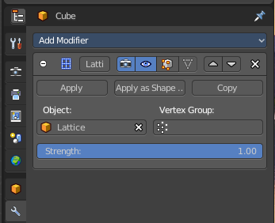
Parents a lattice object to the object.
You need a lattice object and a mesh object. Lattice deformations just works with mesh objects.
Create a lattice, create an object, hold down shift and select the lattice, make parent ...
Parent the mesh object to the lattice object with method Lattice Deform. A Lattice Deform constraint will be added at the mesh object.
Take care of the position and size of the lattice object. It influences how the deformation works.
Enter Edit Mode with the lattice object. Deform it. The mesh object will follow the deformation.
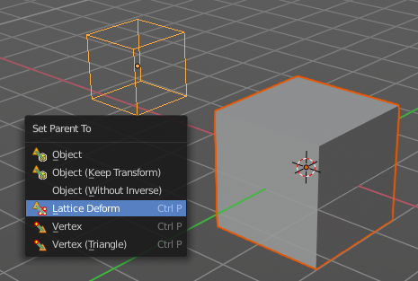
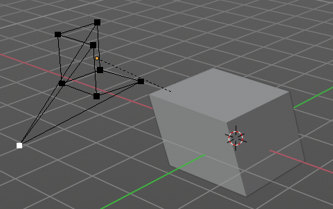
Vertex
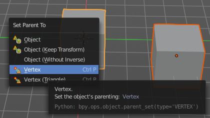
Vertex parents the current object to a vertex of the target object. The vertex will be chosen automatically, it's the
closest vertice of the parent object. When you want to assign the object to a specific vertice, then you have to do
The vertex parenting in Edit mode. You need to have an object type that has vertices. Mesh or curve.
Create a mesh or curve object, create an object, hold down shift and select the mesh object, make parent ...
Vertex (Triangle)
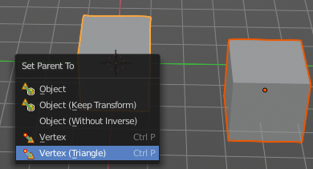
Vertex (Triangle) parents the current object to a face of the target object. The face will be chosen automatically.
It's the closest face of the parent object. When you want to assign the object to a specific face, then you have to
Do the vertex parenting in Edit mode. You need to have an object type that has vertices. Mesh or curve.
Create a mesh or curve object, create an object, hold down shift and select the mesh object, make parent ...
| Entry | What it does |
|---|---|
| Make Parent without Inverse | With normal parenting the child object keeps its world transformation. Without inverse parenting the child object uses the coordinate system of the parent object. As one of the effects you will see that the child objects will jump to the origin of the parent object when parenting. |
| Make Parent without Inverse (Keep Transform ) | Set the object’s parenting without setting the inverse parent connections and applies all transform before the operation. Without inverse parenting the child object uses the coordinate system of the parent object. By keeping the transform, the origin of the parent and child object stay in position. |
| Object (Attach Curves to Surface) | Parent a Hair Curve to the surface of a new object. |
Last Operator Make Parent
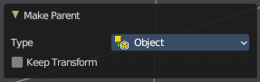
| Entry | What it does |
|---|---|
| Type | Choose the make parent method again. This last operator counts for most of the parent actions. |
| Keep Transform | Apply transform before parenting. |
Clear Parent
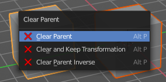
Clear Parent clears the parent relation completely, including involved modifiers.
| Entry | What it does |
|---|---|
| Clear and Keep Transformation | Clear Parent clears the parent relation completely, including involved modifiers. But keeps the current visual transformation. |
| Clear Parent Inverse | Clear Parent Inverse resets the transform corrections applied to the parenting relationship. It does not remove the parenting itself. |
Last Operator Clear Parent
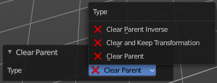
Change the type of clearing.
Move to Collection
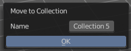
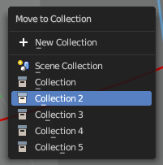
Moves the selected object to a collection. The object is removed from the collection it was in.
By clicking at this menu item a popup will appear choose the new collection. Allows also to create a new collection. Once done, the object will be moved to this new created collection.
This operator can also be found in the Header Object menu.
Last Operator Move to Collection
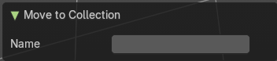
Name
Set a name for your new collection. When you haven't created a new collection, then this name stays blank.
Toggle Local View
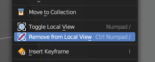
Toggles local view isolating the selection in the viewport. You can find this operator in the Header View menu.
| Entry | What it does |
|---|---|
| Remove from Local | Removes the selection from the Local View keeping the unselected items in the viewport. You can find this operator in the Header View menu. Note: This is a conditional operator that only shows when the context of the 3D View editor is in the Local View mode. |
| Insert Key frame | Inserts a key frame. It uses the default keying set that is defined in the Preferences. |
Insert Key frame with keying sets
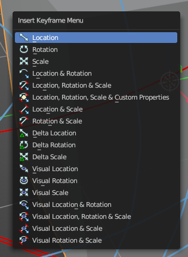
Calls the Insert Key frame menu where you can choose the keying set that you want to use.
The keying set defines what kind of key frames gets recorded. When you start with an
animation, and your object does not have a keying set yet, then you will be prompted with a menu choose the proper keying set. The Insert Key frame menu.
Note that this just adds a keying set to the current key frame. And not to the whole object. That's why the keying set menu down right stays empty when you add a key frame. this way.
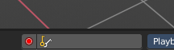
Delete
Deletes the selected object(s).
Show/Hide sub menu
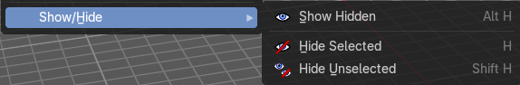
Sub-menu with shows or hide selection, unselected or hidden operators.
Show Hidden
Makes all geometry in the scene visible again.
Hide Selected
Hides the selected geometry.
Last Operator Hide Selected
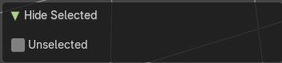
Unselected
Hides the not selected geometry.
Hide Unselected
Hides the not selected geometry. The selected geometry stays visible.